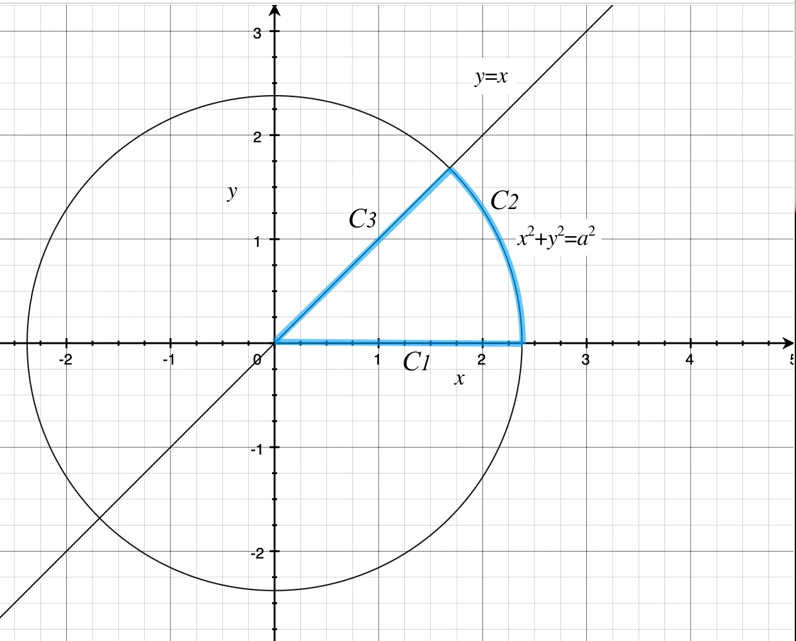
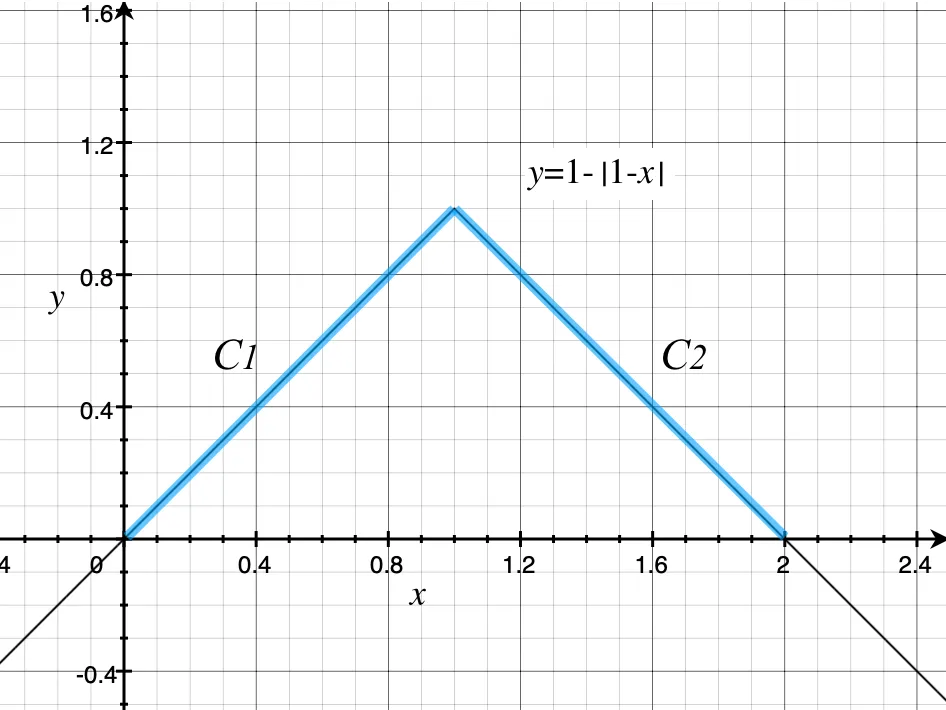
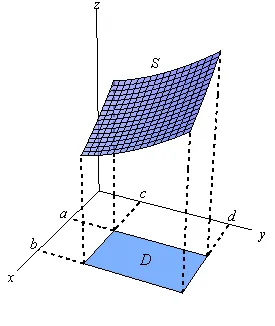
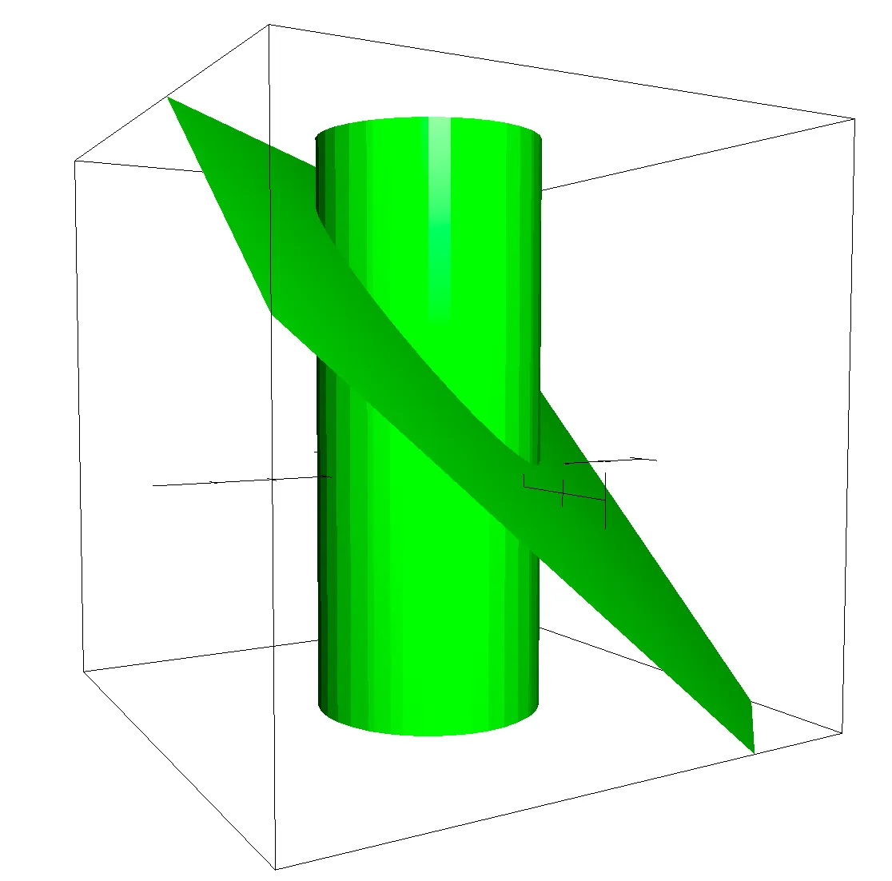
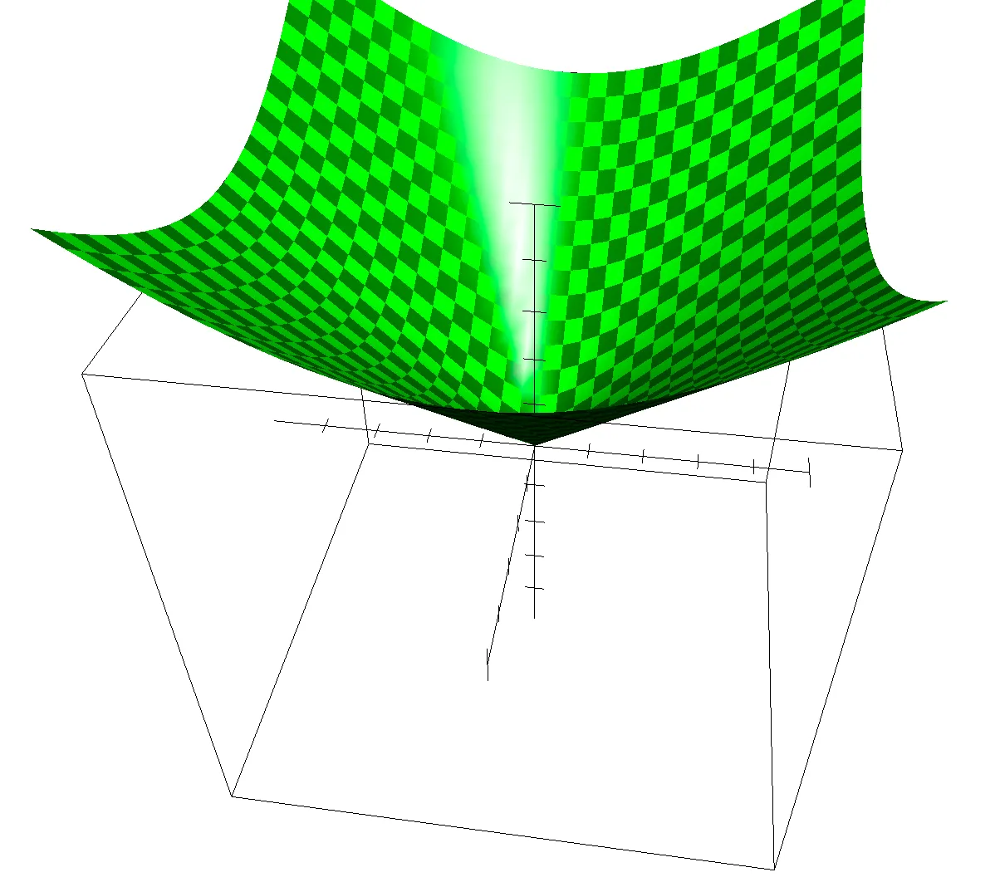

The line integral of $F(x,y)$ along $C$ is defined by: $$\int_CF ds$$
If a curve is defined by parametric equations $x=x(t)$ and $y=y(t)$, then $$ds=\frac{\sqrt{(dx)^2+(dy)^2}}{dt}dt=\sqrt{\left(\frac{dx}{dt}\right)^2+\left(\frac{dy}{dt}\right)^2}dt$$
If we write the parameterization of the curve as a vector function. In this case the curve is given by:
$$\textbf R(t)=x(t)\textbf i+y(t)\textbf j$$
We can simplify the notation by noticing that:
$$ds=\sqrt{\left(\frac{dx}{dt}\right)^2+\left(\frac{dy}{dt}\right)^2}dt=|\textbf R'(t)|dt$$ where $\left|\textbf R'(t)\right|$ is the magnitude of $\textbf R'(t)=x'(t)\textbf i+y'(t)\textbf j$.
Example 1.1: Evaluate $\int_C\exp(\sqrt{x^2+y^2})ds$, where $C$ is the curve shown below.

We first need a parameterization of the $C_1,C_2,C_3$. This is given by: $$\begin{aligned}C_1&=\left\{\begin{aligned}x&=t\\y&=0\end{aligned}\quad(0\leq t\leq a)\right.\\ C_2&=\left\{\begin{aligned}x&=a\cos t\\y&=a\sin t\end{aligned}\quad(0\leq t\leq\frac\pi4)\right.\\ C_3&=\left\{\begin{aligned}x&=t\\y&=t\end{aligned}\quad(0\leq t\leq\frac{\sqrt2}2a)\right.\end{aligned}$$
Now, we need the derivatives of the parametric equations and let’s compute $ds$s. $$\begin{aligned}ds_1&=\sqrt{1^2+0^2}dt=dt\\ ds_2&=\sqrt{(-a\sin t)^2+(a\cos t)^2}dt=adt\\ ds_3&=\sqrt{1^2+1^2}dt=\sqrt2dt\end{aligned}$$
The line integral is then:
$$\begin{aligned}\int_C\exp(\sqrt{x^2+y^2})ds&=\int_{C_1}\exp(\sqrt{t^2+0^2})dt+\\ &\int_{C_2}\exp(\sqrt{(a\cos t)^2+(a\sin t)^2})adt+\\ &\int_{C_3}\exp(\sqrt{t^2+t^2})\sqrt2dt\\ &=\int_0^ae^tdt+\int_0^{\frac\pi4}e^aadt+\int_0^{\frac{\sqrt{2}}{2}a}e^{\sqrt{2}t}\sqrt2dt\\ &=e^a-1+\frac{ae^a\pi}4+e^a-1\\ &=(2+\frac{a\pi}4)e^a-2\end{aligned}$$
The line integral of $\textbf{F}=M(x,y)\textbf{i}+N(x,y)\textbf{j}$ along $C$ is defined by: $$\int_C\textbf{F}\cdot d\textbf{R}\quad\text{or}\quad\int_CM(x,y)dx+N(x,y)dy$$ The parametric representation $x=x(t)$ and $y=y(t), t_1\leq t\leq t_2$, for the curve $C$ allows us to express everything here in terms of $t$, $$\begin{aligned}\int_C\textbf{F}\cdot d\textbf{R}&=\int_CM(x,y)dx+N(x,y)dy\\ &=\int_{t_1}^{t_2}\left(M(x,y)\frac{dx}{dt}+N(x,y)\frac{dy}{dt}\right)dt\end{aligned}$$ This is an ordinary single integral with $t$ as the variable of integration, and it can be evaluated in the usual way.
Example 2.1: Evaluate $\int_C(x^2+y^2)dx+(x^2-y^2)dy$, where $C$ is the curve shown below.

We may parametrize the curve in any way that seems convenient. The simplest parametric representation of this curve is: $$\begin{aligned}C_1&=\left\{\begin{aligned}x&=t\\y&=t\end{aligned}\right.\quad,(0\leq t\leq1)\\ C_2&=\left\{\begin{aligned}x&=t\\y&=-t+2\end{aligned}\right.\quad,(1\leq t\leq2)\end{aligned}$$
Here we have: $$\begin{aligned}C_1&:\left\{\begin{aligned}dx&=dt\\dy&=dt\end{aligned}\right.\\ C_2&:\left\{\begin{aligned}dx&=dt\\dy&=-dt\end{aligned}\right.\end{aligned}$$
So the line integral is: $$\begin{aligned}I_1=\int_{C_1}(t^2+t^2)dt+0=2\int_0^1t^2dt=\frac23\end{aligned}$$ $$\begin{aligned}I_2&=\int_{C_2}\left(t^2+(-t+2)^2\right)dt-\left(t^2-(-t+2)^2\right)dt\\ &=2\int_1^2(-t+2)^2dt\\ &=-2\int_1^2(-t+2)^2d(-t+2)\\ &=-2\times\left[\frac{-t+2}3\right]_1^2\\ &=\frac23\end{aligned}$$ $$I=I_1+I_2=\frac43$$
The surface integral of $F(x,y,z)$ over a smooth surface $S$ given by $z=g(x,y)$, is denoted by: $$\iint_S F(x,y,z)dS$$

If we parameterize a surface given by $z=g(x,y)$ as a vector function: $$\textbf G(x,y)=x\textbf i+y\textbf j+g(x,y)\textbf k$$
Then we have: $$\begin{aligned}\iint_SF(x,y,z)dS&=\iint_DF(x,y,g(x,y))\left|\textbf G_x\times\textbf G_y\right|dA\\ &=\iint_DF\left(x,y,g(x,y)\right)\left|\begin{vmatrix}\textbf i &\textbf j&\textbf k\\ 1&0&\partial g/\partial x\\ 0&1&\partial g/\partial y\end{vmatrix}\right|dA\\ &=\iint_DF\left(x,y,g(x,y)\right)\left|-\frac{\partial g}{\partial x}\textbf i-\frac{\partial g}{\partial y}\textbf j+1\right|dA\\ &=\iint_DF\left(x,y,g(x,y)\right)\sqrt{\left(\frac{\partial g}{\partial x}\right)^2+\left(\frac{\partial g}{\partial y}\right)^2+1^2}\quad dA\end{aligned}$$
Example 3.1: Evaluate $\iint_SzdS$, where $S$ is the intersection of the plane $x+y+z=4$ and the cylinder $x^2+y^2=1$.

First, we find that $z=4-x-y$. That is, $g(x,y)=4-x-y$. Then we have $\textbf G(x,y)=x\textbf i+y\textbf j+(4-x-y)\textbf k$. It can be shown that $D$ is a circle lying in the $xy$-plane with a radius of $1$. Next we can calculate the integral:
$$\begin{aligned}\iint_SzdS&=\iint_D(4-x-y)\left|\textbf G_x\times\textbf G_y\right|dA\\ &=\iint_D(4-x-y)\sqrt{(-1)^2+(-1)^2+1^2}dA\\ &=\sqrt3\int_0^{2\pi}\int_0^1(4-r\cos\theta-r\sin\theta)rdrd\theta\\ &=\sqrt3\int_0^{2\pi}\left[2r^2-\frac13r^3\cos\theta-\frac13r^3\sin\theta\right]_0^1d\theta\\ &=\sqrt3\int_0^{2\pi}\left(2-\frac{\cos\theta}3-\frac{\sin\theta}3\right)d\theta\\ &=\sqrt3\left[2\theta-\frac{\cos\theta}3+\frac{\sin\theta}3\right]_0^{2\pi}\\ &=\sqrt3\left(4\pi-1+0-0+1-0\right)\\ &=4\sqrt3\pi\end{aligned}$$
Given a vector field $\textbf F(x,y,z)$ with unit normal vector $\textbf n$, then the surface integral of $\textbf F$ over the surface $S$ is given by: $$\iint_S\textbf F\cdot d\textbf S=\iint_S\textbf F\cdot\textbf ndS$$
If we parameterize a surface given by $z=g(x,y)$ as a vector function as mention before, we will find that: $$\textbf n=\frac{\textbf G_x\times\textbf G_y}{|\textbf G_x\times\textbf G_y|}$$
Then: $$\begin{aligned}\iint_S\textbf F\cdot d\textbf S&=\iint_S\textbf F\cdot\textbf ndS\\ &=\iint_D\textbf F\cdot\frac{\textbf G_x\times\textbf G_y}{|\textbf G_x\times\textbf G_y|}|\textbf G_x\times\textbf G_y|dA\\ &=\iint_D\textbf F\cdot(\textbf G_x\times\textbf G_y)dA\end{aligned}$$
Example 4.1: Evaluate $\iint_S\textbf F\cdot d\textbf S$, where $\textbf F=xz^2\textbf i+y^2\textbf j+zx\textbf k$ and $S$ is the surface given by $z=\sqrt{x^2+y^2},1\leq z\leq 2$.

We first parameterize $S$ into a vector form: $$G(x,y)=x\textbf i+y\textbf j+\sqrt{x^2+y^2}\textbf k$$ And we have: $$\begin{aligned}G_x=(1,0,\frac x{\sqrt{x^2+y^2}})\\ G_y=(0,1,\frac y{\sqrt{x^2+y^2}})\end{aligned}$$
Then: $$\begin{aligned}G_x\times G_y&=\begin{vmatrix}\textbf i&\textbf j&\textbf k\\ 1&0&\frac x{\sqrt{x^2+y^2}}\\ 0&1&\frac y{\sqrt{x^2+y^2}}\end{vmatrix}\\ &=-\frac x{\sqrt{x^2+y^2}}\textbf i-\frac y{\sqrt{x^2+y^2}}\textbf j+\textbf k\end{aligned}$$
Next, we can find that $D$ is an annulus or a ring lying in the $xy$-plane with an inner radius of $1$ and an outer radius of $4$.
$$\begin{aligned}\iint_S\textbf F\cdot d\textbf S&=\iint_S\textbf F\cdot\textbf ndS\\ &=\iint_D(xz^2,y^2,zx)\cdot(-\frac x{\sqrt{x^2+y^2}},-\frac y{\sqrt{x^2+y^2}},1)dA\\ &=\iint_D\left(-\frac {x^2z^2}{\sqrt{x^2+y^2}}-\frac {y^3}{\sqrt{x^2+y^2}}+zx\right)dA\\ &=\iint_D\left(-x^2\sqrt{x^2+y^2}-\frac{y^3}{\sqrt{x^2+y^2}}+x\sqrt{x^2+y^2}\right)dA\\ &=\int_0^{2\pi}d\theta\int_1^2\left(-r^3\cos^2\theta-r^2\sin^3\theta+r^2\cos\theta\right)rdr\\ &=\int_0^{2\pi}d\theta\left[-\frac15r^5\cos^2\theta-\frac14r^4\sin^3\theta+\frac14r^4\cos\theta\right]_1^2\\ &=\int_0^{2\pi}d\theta\left(-\frac1532\cos^2\theta-4\sin^3\theta+4\cos\theta+\frac15\cos^2\theta+\frac14\sin^3\theta+\frac14\cos\theta\right)\\ &=-\frac{32}5\pi+\frac15\pi\\ &=-\frac{31}5\pi \end{aligned}$$
Stoke's Theorem:
If $S$ is a surface in space with boundary curve $C$, then the circulation of a vector field $\textbf F=(P,Q,R)$ around $C$ is equal to the integral over $S$ of the normal component of the curl of $\textbf F$, $$\begin{aligned}\oint_C\textbf F\cdot d\textbf R&=\iint_S\textup{curl }\textbf Fd\textbf S\\&=\iint_S(\nabla\times\textbf F)\cdot \textbf ndS\\&=\iint_S(\nabla\times\textbf F)\cdot(G_x\times G_y)dA\end{aligned}$$
If the surface $S$ is a region lying in the $xy$-plane, then $\textbf n=\textbf k$, $z=0$ and we see that: $$\textbf G(x,y)=x\textbf i+y\textbf j+0\textbf k$$ $$G_x\times G_y=(0,0,1)$$ $$\begin{aligned}\nabla\times\textbf F&=\begin{vmatrix}\textbf i&\textbf j&\textbf k\\ \partial/\partial x&\partial/\partial y&\partial/\partial z\\ P&Q&R\end{vmatrix}\\ &=\left(\frac{\partial R}{\partial y}-\frac{\partial Q}{\partial z},-\left(\frac{\partial R}{\partial x}-\frac{\partial P}{\partial z}\right),\frac{\partial Q}{\partial x}-\frac{\partial P}{\partial y}\right)\end{aligned}$$ $$(\nabla\times\textbf F)\cdot(G_x\times G_y)=\frac{\partial Q}{\partial x}-\frac{\partial P}{\partial y}$$
so the Stokes' Theorem reduces to the 2-D Green's Theorem.
Example 5.1: Evaluate $\oint_C\textbf F\cdot d\textbf R$, where $\textbf F=\left(\frac{-y}{x^2+y^2},\frac{x}{x^2+y^2}\right)$ and $C$ is $(x+2)^2+(y-2)^2=1$ (ccw).
$$\begin{aligned}\textup{curl }\textbf F&=\nabla\times\textbf F\\ &=\begin{vmatrix}\textbf i&\textbf j&\textbf k\\ \partial/\partial x&\partial/\partial y&\partial/\partial z\\ -y/(x^2+y^2)&x/(x^2+y^2)&0\end{vmatrix}\\ &=0\end{aligned}$$
So $\oint_C\textbf F\cdot d\textbf R=0$.
Gauss's Theorem:
The flux of a vector field $\textbf F$ out through a closed surface $S$ equals the integral of the divergence of $\textbf F$ over the region $R$ bounded by $S$, $$\begin{aligned}\iint_S\textbf F\cdot d\textbf S&=\iint_S\textbf F\cdot \textbf ndS\\&=\iiint_R\textup{div }\textbf FdV\end{aligned}$$